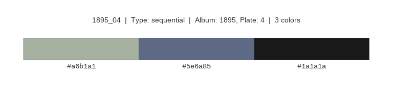
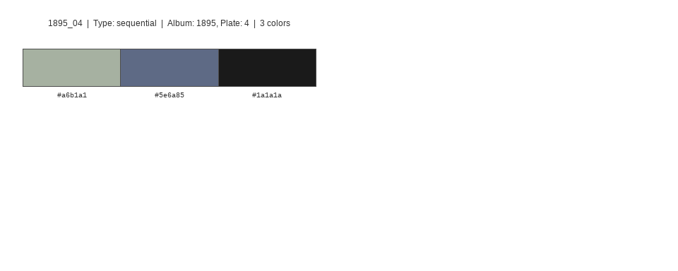
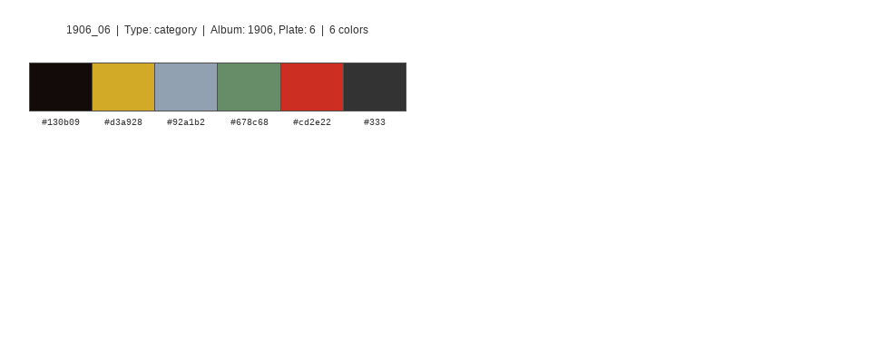
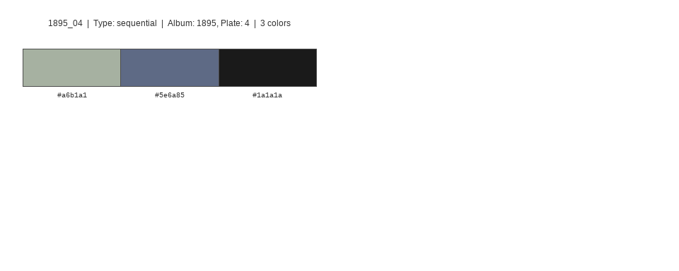
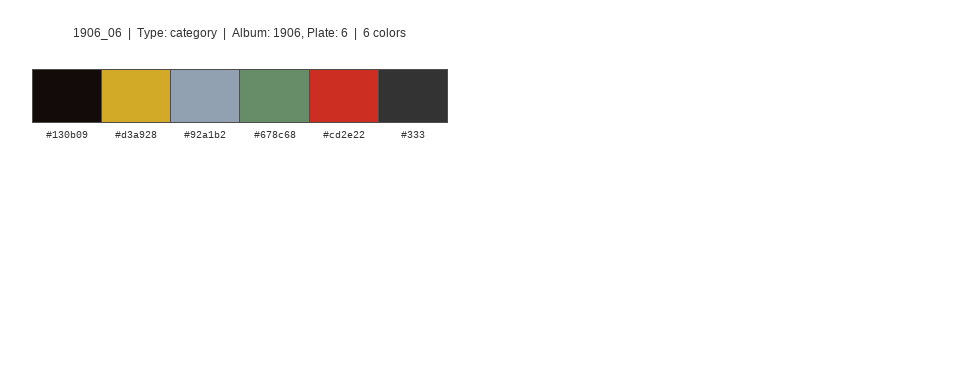

Version 1.0.0; documentation built 2026-01-13
The ggCheysson package brings the graphical styles of the Albums de Statistique Graphique to R and ggplot2.
The Albums were produced by the Ministry of Public Works in France under the direction of Émile Cheysson from 1879-1897. They represent the “pinnacle of the Golden Age of Statistical Graphics” (Friendly, 2008) for their innovation in visualization techniques, graphic design and beauty.
The package is based on work by:
- David Rumsey Map Collection: Complete digitized Albums de Statistique Graphique View collection
- RJ Andrews: Classic Map Color Design | GitHub
- Tom Shanley: Observable implementation Cheysson Color Palettes
- Kenneth Fields: Hand-drawn font family creation The style of Émile Cheysson
Historical Context
The Albums de Statistique Graphique were published annually by France’s Ministry of Public Works, showcasing infrastructure statistics through innovative visualizations. Under Émile Cheysson’s direction, these albums combined:
- Sophisticated use of color to represent quantitative variables
- Hatching patterns to differentiate categories and show density
- Hand-lettered text with distinctive character
- Clear hierarchical organization of information
This package preserves these design elements for modern statistical graphics.
Installation
Install the development version from GitHub:
# install.packages("remotes")
remotes::install_github("friendly/ggCheysson")Suggested Dependencies
For full functionality, install these packages:
install.packages(c("ggpattern", "systemfonts"))Features
This package provides a complete aesthetic system for creating visualizations in Cheysson’s distinctive style:
🎨 Color Palettes
- 20 authentic color palettes extracted from the original Albums
- Sequential, diverging, grouped, and categorical palette types
- Named by album year and plate number (e.g.,
1880_07,1881_03) - Compatible with standard ggplot2 color scales
📐 Hatching Patterns
- 83 pattern specifications including solid fills, stripes, and crosshatching
- Line angles (0°, 45°, 90°, 135°) matching historical diagrams
- Variable densities and line widths
- Full integration with ggpattern
✍️ Authentic Fonts
- 5 hand-drawn font families replicating Cheysson’s lettering style
- Regular, Italic, Sans Caps, Outline Caps, and Title variants
- Automatic loading and integration with ggplot2 themes
- Created by Kenneth Fields for historical accuracy
🎭 Complete Themes
-
theme_cheysson()- Full period-appropriate theme -
theme_cheysson_minimal()- Minimal grid variant -
theme_cheysson_map()- Optimized for cartographic work
These were derived by RJ Andrews from a collection of 25 thematic maps across the span of years in which the Albums were produced, shown below.

From these, he abstracted the following combinations of color and pattern he thought characterized these maps:
Quick Start
Here are a few examples to get you started.
Basic Color Palette
Use the color palette of the 1881 Album, plate 4
library(ggplot2)
library(ggCheysson)
ggplot(iris, aes(Sepal.Length, Sepal.Width, color = Species)) +
geom_point(size = 3) +
scale_color_cheysson("1881_04") +
labs(title = "Iris Dataset") +
theme_minimal()
With Fonts and Theme
# Load Cheysson fonts (once per session)
load_cheysson_fonts(method = "showtext")
# Enable showtext for rendering
showtext::showtext_auto()
ggplot(mtcars, aes(wt, mpg, color = factor(cyl))) +
geom_point(size = 3) +
scale_color_cheysson("1883_04") +
labs(
title = "Automobile Efficiency",
subtitle = "Weight vs Fuel Economy",
x = "Weight (1000 lbs)",
y = "Miles per Gallon"
) +
theme_cheysson()
Complete Cheysson Aesthetic (Colors + Patterns + Fonts)
library(ggpattern)
data <- data.frame(
category = LETTERS[1:4],
value = c(15, 23, 18, 20)
)
ggplot(data, aes(category, value, fill = category)) +
geom_col_pattern(
aes(
pattern_type = category,
pattern_fill = category,
pattern_angle = category
),
pattern = "stripe",
pattern_density = 0.35,
color = "black"
) +
scale_fill_cheysson_pattern("1881_03") +
scale_pattern_fill_cheysson("1881_03") +
scale_pattern_type_cheysson("1881_03") +
scale_pattern_angle_cheysson("1881_03") +
labs(
title = "Statistical Comparison",
x = "Category",
y = "Value"
) +
theme_cheysson() +
theme(legend.position = "none")
Available Palettes
View all available palettes:
library(ggCheysson)
# List all palettes
list_cheysson_pals()
#> name type album plate n_colors
#> 1 1880_07 category 1880 7 7
#> 2 1881_03 sequential 1881 3 1
#> 3 1881_04 category 1881 4 4
#> 4 1881_08 grouped 1881 8 5
#> 5 1882_04 grouped 1882 4 2
#> 6 1883_04 diverging 1883 4 2
#> 7 1883_06 category 1883 6 4
#> 8 1883_07 diverging 1883 7 3
#> 9 1886_04 sequential 1886 4 2
#> 10 1886_07 category 1886 7 3
#> 11 1886_08 grouped 1886 8 4
#> 12 1887_06 grouped 1887 6 2
#> 13 1888_05 sequential 1888 5 1
#> 14 1891_03 grouped 1891 3 2
#> 15 1891_06 sequential 1891 6 1
#> 16 1891_07 sequential 1891 7 2
#> 17 1895_04 sequential 1895 4 3
#> 18 1900_06 sequential 1900 6 2
#> 19 1906_04 category 1906 4 4
#> 20 1906_06 category 1906 6 6
# List by type
list_cheysson_pals("sequential")
#> name type album plate n_colors
#> 1 1881_03 sequential 1881 3 1
#> 2 1886_04 sequential 1886 4 2
#> 3 1888_05 sequential 1888 5 1
#> 4 1891_06 sequential 1891 6 1
#> 5 1891_07 sequential 1891 7 2
#> 6 1895_04 sequential 1895 4 3
#> 7 1900_06 sequential 1900 6 2
# View palette colors
cheysson_pal("1880_07")
#> [1] "#d9636c" "#869e80" "#dec367" "#85aab1" "#aea9a4" "#ed8238" "#ab90a4"Visualizing Palettes
Use show_palette() to display a palette with color swatches and hex codes:
# Display a single palette with metadata
show_palette("1895_04")
# Display multiple palettes at once
show_palettes(c("1880_07", "1881_03", "1895_04"))


# Display four palettes in a 2x2 grid
show_palettes(c("1880_07", "1881_03", "1895_04", "1906_06"), ncol = 2)
 

# Display all palettes of a specific type
show_palettes("category")Palette types:
- Sequential (7 palettes): For ordered quantitative data
- Diverging (2 palettes): For data with neutral midpoint
- Grouped (5 palettes): For comparing related groups
- Category (6 palettes): For categorical data
Pattern Support
With ggpattern, recreate the distinctive hatching styles:
# List available pattern palettes
list_cheysson_patterns()
# Get pattern specifications
patterns <- cheysson_pattern("1881_03")
# Use in plots with pattern scales
scale_pattern_fill_cheysson("1881_03")
scale_pattern_type_cheysson("1881_03")
scale_pattern_angle_cheysson("1881_03")Font Families
Five Cheysson font families are included:
| Family | Description | Use |
|---|---|---|
Cheysson |
Regular serif | Body text, labels |
CheyssonItalic |
Italic variant | Emphasis |
CheyssonSansCaps |
Sans capitals | Axis titles |
CheyssonOutlineCaps |
Outlined caps | Decorative titles |
CheyssonTitle |
Display font | Main titles |
Here are some of these:
To use these:
# Load fonts
load_cheysson_fonts(method = "showtext")
showtext::showtext_auto()
# View font metadata
cheysson_fonts
# Use specific fonts
theme(
plot.title = element_text(family = "CheyssonTitle"),
axis.title = element_text(family = "CheyssonSansCaps"),
axis.text = element_text(family = "Cheysson")
)Package Contents
Data
-
cheysson_palettes- Color palette specifications (20 palettes) -
cheysson_patterns- Pattern/hatching specifications (83 patterns) -
cheysson_fonts- Font family metadata (5 fonts) -
albumImages- Metadata linking palettes to original album plates
Color Functions
-
cheysson_pal()- Get colors from a palette -
scale_color_cheysson()/scale_fill_cheysson()- ggplot2 color scales -
list_cheysson_pals()- List available palettes -
show_palette()- Display a single palette with color swatches and hex codes -
show_palettes()- Display multiple palettes for comparison
Pattern Functions
-
cheysson_pattern()- Get pattern specifications -
scale_pattern_*_cheysson()- ggpattern scales for fills, types, angles, densities -
list_cheysson_patterns()- List available pattern palettes
Font Functions
-
load_cheysson_fonts()- Load font families -
cheysson_font()- Get font family names -
cheysson_fonts_available()- Check font availability
Themes
-
theme_cheysson()- Complete Cheysson theme -
theme_cheysson_minimal()- Minimal variant -
theme_cheysson_map()- For maps
Sources and Attribution
Color Palettes and Patterns
David Rumsey Map Collection: Complete digitized Albums de Statistique Graphique View collection
RJ Andrews: SVG pattern extraction and digitization Classic Map Color Design | GitHub
Tom Shanley: Observable implementation Cheysson Color Palettes
Fonts
- Kenneth Fields: Hand-drawn font family creation The style of Émile Cheysson
Gallery
Original maps from the Albums showing the variety of colors and patterns

Extracted color palettes by RJ Andrews
Development Status
This package is under active development. Current features are stable and tested, but the API may evolve. Feedback and contributions are welcome!
Related Packages
- ggpattern - Pattern fills for ggplot2
- ggthemes - Additional themes for ggplot2
- systemfonts - Font handling for R
Citation
To cite ggCheysson, please use:
citation("ggCheysson")
#> To cite package 'ggCheysson' in publications use:
#>
#> Friendly M (2025). _ggCheysson: Graphic Styles of Emile Cheysson for
#> ggplot2_. R package version 1.0.0,
#> <https://github.com/friendly/ggCheysson>.
#>
#> A BibTeX entry for LaTeX users is
#>
#> @Manual{,
#> title = {ggCheysson: Graphic Styles of Emile Cheysson for ggplot2},
#> author = {Michael Friendly},
#> year = {2025},
#> note = {R package version 1.0.0},
#> url = {https://github.com/friendly/ggCheysson},
#> }To cite the original Albums de Statistique Graphique:
France. Ministère des travaux publics. Album de statistique graphique de [year]. Paris: Imprimerie nationale, [1879-1897].
References
Friendly, M. (2008). The Golden Age of Statistical Graphics. Statistical Science, 23(4), 502–535. https://doi.org/10.1214/08-STS268